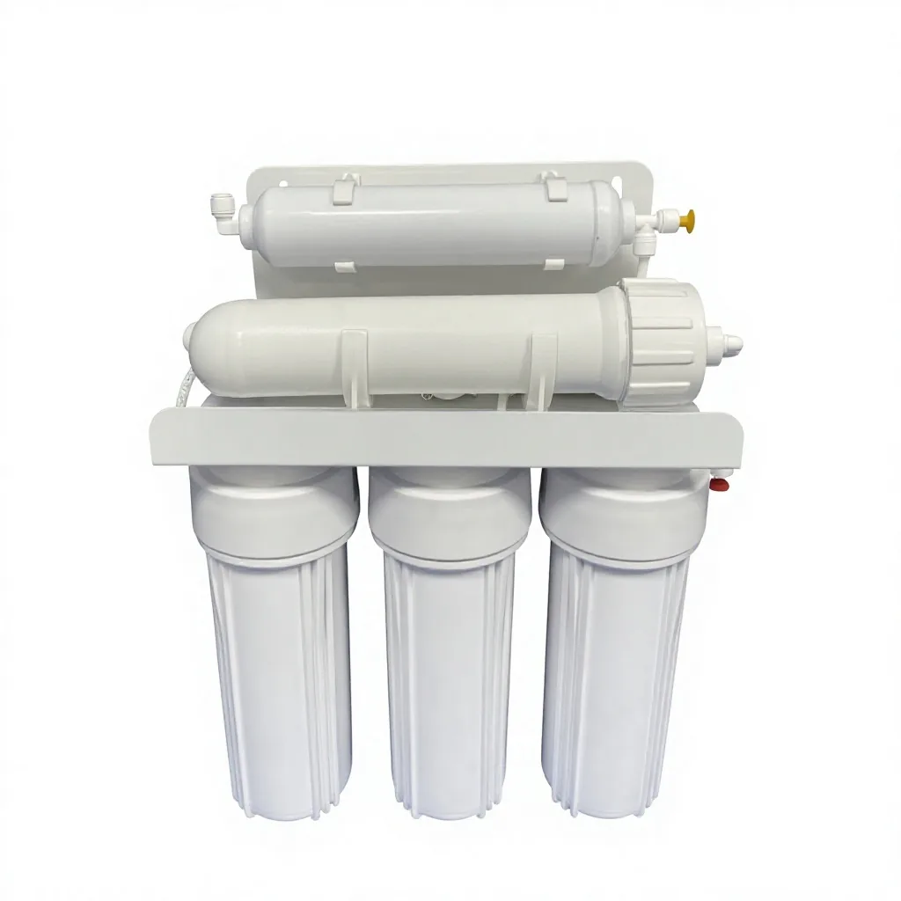
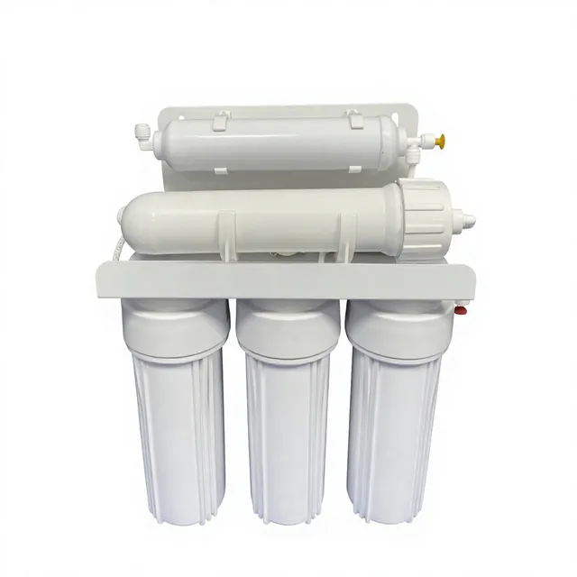
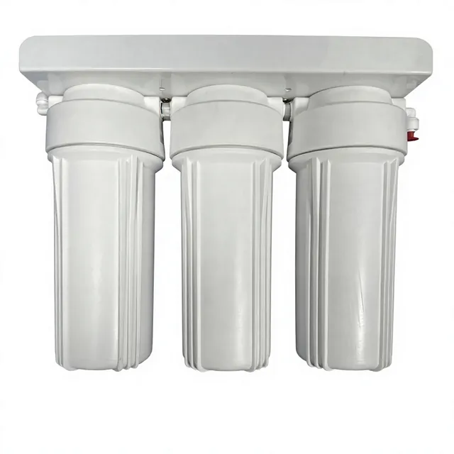
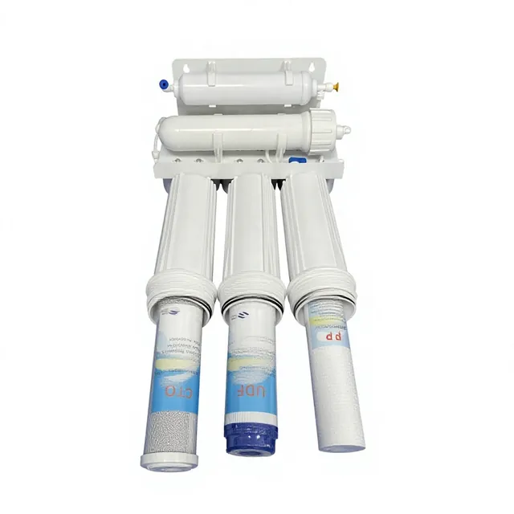
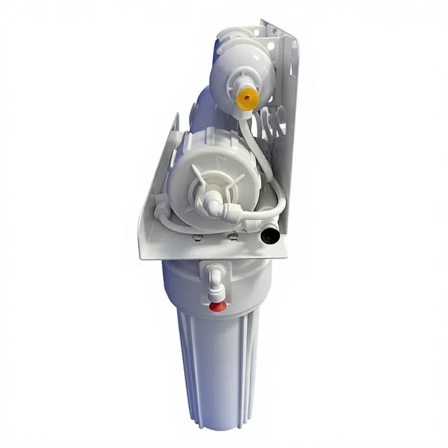
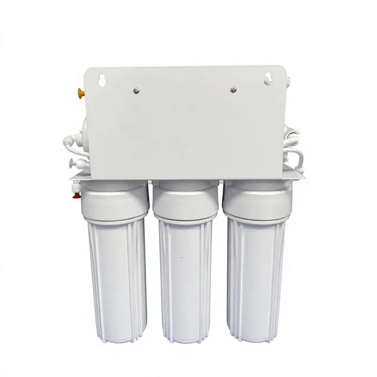
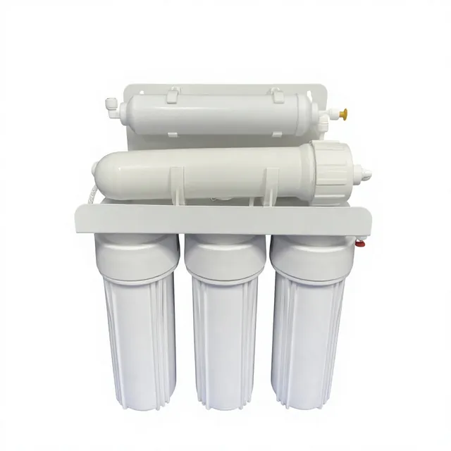
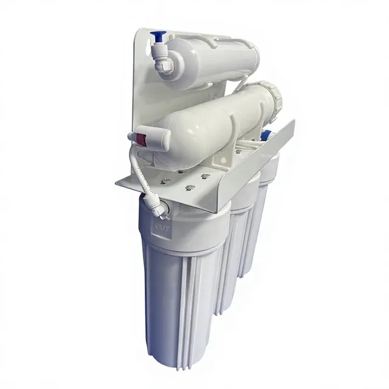

Pump-Free Five-Stage RO Water Purifier
A non-electric five-stage reverse osmosis unit for markets with stable municipal inlet pressure. It combines sediment prefiltration, activated carbon, membrane filtration and post-carbon polishing in a compact wall-mounted or under-sink layout for distributor programs. Key specifications include Installation: Wall-mounted or under-sink point-of-use drinking water system.

Pump-free design for stable tap-water pressure
This model removes the booster pump from a standard household reverse osmosis layout, reducing wiring complexity, vibration and pump-related service parts where inlet pressure is suitable. It is best reviewed for apartment kitchens, cabinet installations and retail replacement programs that can confirm local tap-water pressure before order.
Five-stage filtration process
Standard sequence: PP sediment prefilter, UDF/GAC activated carbon, CTO carbon block, membrane filtration and T33 post carbon. Buyers can confirm cartridge labels, filter length, tubing set and faucet kit for their private-label package.
Technical specifications
| Model | Pump-Free Five-Stage RO Water Purifier |
|---|---|
| Filtration sequence | PP sediment + UDF/GAC carbon + CTO carbon + RO membrane + T33 post carbon |
| Installation | Wall-mounted or under-sink point-of-use drinking water system |
| Power | No booster pump; requires suitable municipal tap-water pressure |
| OEM/ODM | Logo, filter labels, tubing, faucet, manual and carton options |
| MOQ | Confirm after branding, package and filter-set requirements |
Applications
Suitable for household kitchens, apartments, small office pantries and distributor programs that need a simple purifier layout without an electric pump. It is not intended for low-pressure feed water unless the project adds an external booster solution.
OEM and quality support
Before quotation, confirm feed-water pressure, membrane capacity, filter set, faucet style, tubing color, label artwork, carton language and destination market documentation. Samples can be matched to the approved configuration before bulk production.
Product images







Product video
FAQ
When is the pump-free design suitable?
It is suitable when the target market has stable municipal inlet pressure and the buyer wants a simpler purifier layout without a booster pump, transformer or pump wiring.
What filtration sequence is supplied?
The standard sequence is PP sediment, UDF/GAC carbon, CTO carbon block, RO membrane and T33 post carbon. Filter labels and replacement bundles can be adjusted for confirmed OEM orders.
What should buyers confirm before quotation?
Confirm inlet pressure, expected membrane capacity, installation space, faucet and tubing set, label artwork, manual language, carton style and destination market documents.
Buyer selection notes
Pump-Free Five-Stage RO Water Purifier fits distributor programs that need a pump-free RO water purifier for stable tap-water pressure areas. Compare it by five-stage reverse osmosis system layout, non-electric operation, bracket position, membrane specification, T33 polishing filter and replacement-kit packaging.
Details to confirm before quotation
- Local tap-water pressure and non-electric installation conditions
- Five-stage reverse osmosis system layout and filter sequence
- Wall-mounted or under-sink fixing method
- Replacement filter bundle, label and distributor packaging
Request OEM Quote
Buyer notes for Pump-Free Five-Stage RO Water Purifier
For Pump-Free Five-Stage RO Water Purifier, use this model when the buyer needs a defined purifier configuration with practical installation details, replacement filter planning and export carton control. The page should answer how the unit fits into a kitchen, office or commercial drinking-water program before repeating broad RO or OEM claims.
Information to confirm
- Target daily use and required capacity
- Filtration stages and replacement filter bundle
- Cabinet, panel, faucet and packaging requirements
- Destination market documents and carton labeling